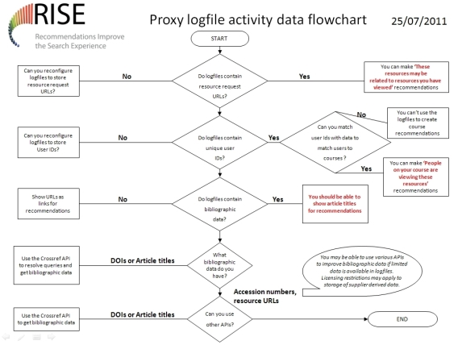

Recommender systems: Recommendations Improve the Search Experience (RISE)
Here are a few things that we have learnt about EZProxy log files and how you can use them to
make recommendations.
1. What is in the log file determines what you can do
You are restricted by what is stored within the log file as you need certain elements of data to be
able to make recommendations or even to get other data from elsewhere to improve the data you
collect. So you need user IDs to be able to get course information and you need bibliographic data
of some form (or at least a mechanism to get bibliographic data related to the data you have in the
log file). Essentially you need hooks that you can use to get other data.
2. How you use EZProxy determines what you see in the log file
At the OU we link as many systems through EZProxy as we can. This includes our Discovery
Service from Ebsco. The big implication is that Discovery Services aggregate content so the
EZProxy log files show the Discovery Service as the provider. Our log files are full of Ebsco URLs
and have far fewer resource URLs from other providers.
3. You can make basic recommendations from the proxy log files
You can make a very simple recommendation from a log file. There is a high chance that if a user
looks at two resources, one after the other, then there is a relationship between the resources. If
you store that connection as a relationship then that can form the basis of a recommendation
‘These resources may be related to resources you have viewed’. The more people that look at
those two resources one after another the more that reinforces that relationship and
recommendation.
4. You need some bibliographic data for your recommendations
To show a recommendation to a user you really need to have something like an article title to
display. Otherwise the user can't easily judge what the recommendation is about. For RISE we've
used the Ebsco Discovery API to retrieve some suitable metadata and then passed that to the
Crossref API to get bibliographic data that we can store in the system. The approach is to a great
extent determined by what you have in your log files and what systems you can access.
5. You can get other data to make other types of recommendations
You can enhance your log file data as long as you have key bits of data you can use. So if you
have a user ID or logon that matches up with your student information system then you can relate
activity to other things such as the course being studied.
Proxy log file flowchart
To summarise the things that we have found with our EZProxy log files RISE has put together the
following flowchart.
